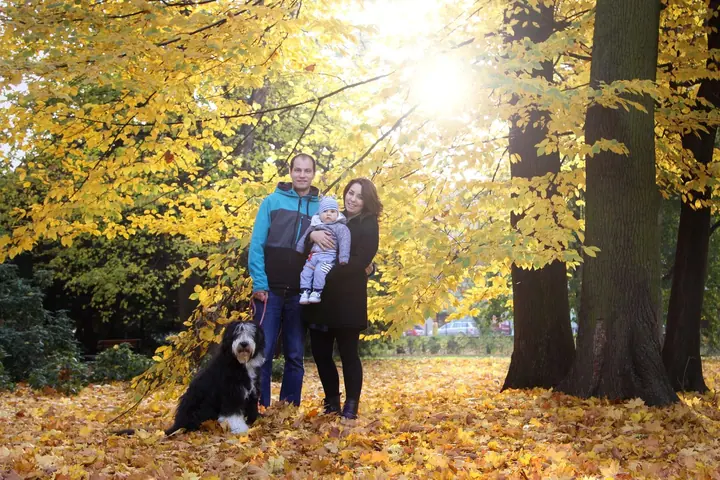
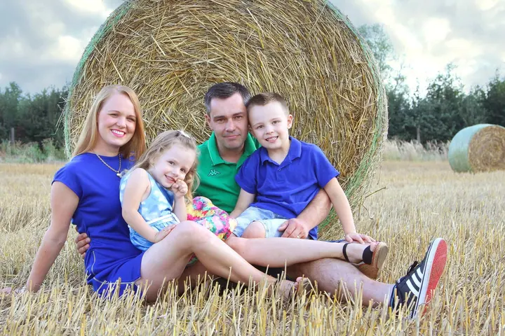

jedna
Svatební fotografování
Spojuji dokumentární, portrétní a rodinnou fotografii s aranžovanou scénou. Od ranních příprav až po večerní zábavu se nechám unášet atmosférou vašeho dne.

Svatební a rodinná fotografka · Uherské Hradiště, Zlín

Jmenuji se Romana Musilová a fotím svatby, rodiny s dětmi i úplně malá miminka. Jsem malá, energická a nápaditá, proto si říkám nejmenší fotografka. Na focení mě nejvíc baví, že se v něm potkávají lidé a emoce.
Více o mně
Co fotím
jedna
Spojuji dokumentární, portrétní a rodinnou fotografii s aranžovanou scénou. Od ranních příprav až po večerní zábavu se nechám unášet atmosférou vašeho dne.
dvě
Fotím jednotlivce, páry, rodiny s dětmi, budoucí rodiče i různé skupinky. Nemusí se bát ani ti stydlivější, rychle vás dostanu do té správné nálady.
tři
Ráda fotím i ta nejmenší miminka v jejich prvních dnech. Drobné nožičky, huňaté deky a klidné chvilky, na které se nezapomíná.
Fotím rodinné oslavy, kdy je celá rodinka pohromadě. Uchovám vám hezké vzpomínky i jedinečnou atmosféru celého dne.

Od ranních příprav až po první tanec.

Za objektivem
Fotografování mě zajímá od dětství. Geny pro focení jsem podědila po tátovi, který je podobně skladný a kreativní jako já, a tak jsem si vybrala střední školu s oborem Fotograf. Nejvíc mě tehdy zaujala abstraktní, dokumentární a portrétní fotografie a věnuji se jí dodnes.
Na svatbách propojuji dokumentární, portrétní i rodinnou fotografii s aranžovanou scénou. Od ranních příprav až po večerní zábavu se nechám unášet atmosférou dne. Přeji si, aby na vás z fotek i po letech dýchla atmosféra, ve které vznikaly.
Moje fotky se objevily na výstavách v Kině Hvězda v Uherském Hradišti i ve Zlíně a Vsetíně a s fotoklubem jsem uspěla v několika soutěžích. Nejradši ale fotím lidi, kteří před objektivem nejsou zvyklí stát. Vlezu se do každého batůžku a i ti stydlivější se se mnou rychle uvolní.
Romana
Zavolejte, napište e-mail nebo vyplňte formulář. Domluvíme termín a vybereme balíček, který vám sedne.
Probereme, co je pro vás důležité, kde budeme fotit a jak bude den probíhat. Se vším ráda poradím.
Od ranních příprav po první tanec nebo procházku s dětmi v přírodě. Fotím momentky i aranžované chvíle, ať je výsledek plný života.
Upravené fotografie dostanete v digitální podobě i vytištěné ve formátu 10 × 15 cm. U svateb přidávám na flash disku i všechny neupravené snímky.
Portfolio
Fotografie jsou ilustrační
Otázky
Základní balíček na 4 hodiny stojí 10 800 Kč a zahrnuje obřad, skupinové fotky a focení novomanželů venku. Kompletní balíček na 10 hodin za 14 800 Kč přidává ranní přípravy, hostinu, krájení dortu a první tanec.
Základní balíček obsahuje 50 a kompletní 100 upravených fotografií v digitální i tištěné podobě. Navíc dostanete všechny vytvořené fotky v neupravené podobě na flash disku.
Rodinné a portrétní focení stojí 1 800 Kč a obsahuje 15 upravených fotografií v digitální i tištěné podobě.
Cestovné v ceně balíčků není. Připočítám ho podle předloženého cestovního dokladu.